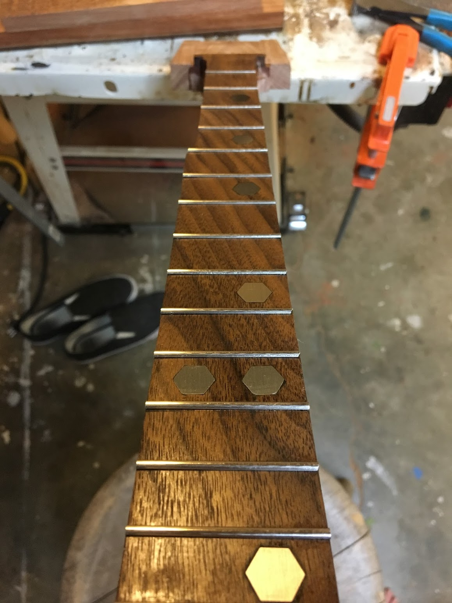

oil can instruments
the oil can guitars, like the cigarbox guitars, have always facinated me for their rougher, mountain-rock & roll style and persona.
i needed a design challenge though so i set out to not only create a guitar and close relative the banjo - but what happens when you use an oil can as the resonator for... a uke, mandolin, or strumstick?
i needed a design challenge though so i set out to not only create a guitar and close relative the banjo - but what happens when you use an oil can as the resonator for... a uke, mandolin, or strumstick?
starting with the banjo, i needed to plan out how i was going to attach the neck to the oil cans in such a way to balance the structual integrity of the instrument with the avoiding inhibiting the sound.
the simple answer was essentially - make it a stick and bolt it in from the bottom. plus - this gives me more than enough room to throw a piezo-pickup in the oil can.
the simple answer was essentially - make it a stick and bolt it in from the bottom. plus - this gives me more than enough room to throw a piezo-pickup in the oil can.
the next easy part of most of these instruments is making templates for the neck and fretboard shapes.
here i've laid out the different templates i made in order to adequately size the oil can resonators to buy.
here i've laid out the different templates i made in order to adequately size the oil can resonators to buy.
fretting is by far the most difficult part of building any instruments with frets. i've read that a trained musician can supposedly hear a difference in fret location by 1/64".
So great - these frets have to be perfect and i get a spreadsheet with locations like 30.8435". this is where my fraction parser app is insanely useful.
So great - these frets have to be perfect and i get a spreadsheet with locations like 30.8435". this is where my fraction parser app is insanely useful.
gluing down the fretboard, now cut with every fret-slot needed, i can position the neck and fretboard perfectly for the scale length of the instrument.
i now get to marvle at the fact that i'm making a banjo from what i expect an oil can banjo to look like and reseraching almost nothing else outside of where does that high string end mid-way on the neck.
i now get to marvle at the fact that i'm making a banjo from what i expect an oil can banjo to look like and reseraching almost nothing else outside of where does that high string end mid-way on the neck.

in the spirit of the oil can nature of the instrument line i'm making, i decided to use a bolt head for the fret markers on the neck. threads were cut off, and the head was inset into the fretboard.
the frets were next so i could sand everything perfectly flat before having to level the frets.
the frets were next so i could sand everything perfectly flat before having to level the frets.